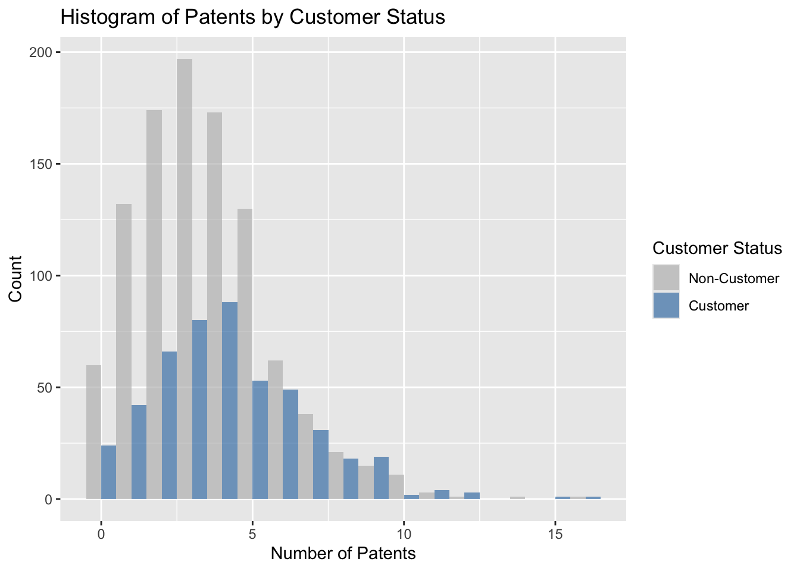
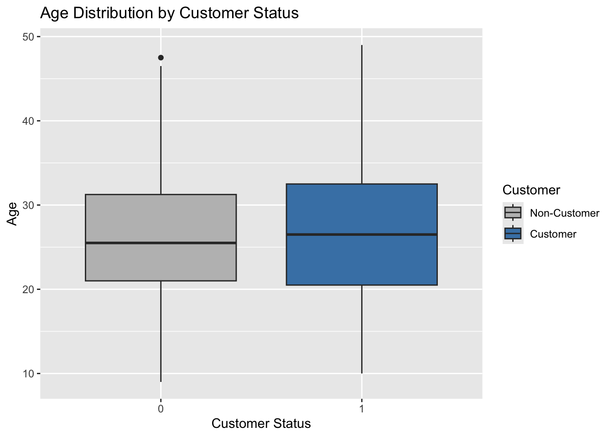
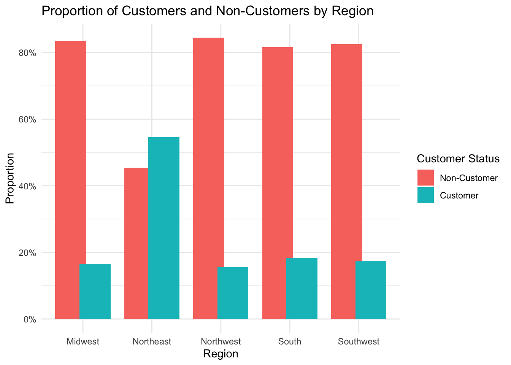

Blueprinty is a small firm that makes software for developing blueprints specifically for submitting patent applications to the US patent office. Their marketing team would like to make the claim that patent applicants using Blueprinty’s software are more successful in getting their patent applications approved. Ideal data to study such an effect might include the success rate of patent applications before using Blueprinty’s software and after using it. Unfortunately, such data is not available.
However, Blueprinty has collected data on 1,500 mature (non-startup) engineering firms. The data include each firm’s number of patents awarded over the last 5 years, regional location, age since incorporation, and whether or not the firm uses Blueprinty’s software. The marketing team would like to use this data to make the claim that firms using Blueprinty’s software are more successful in getting their patent applications approved.
Data
Code
# histogram of patentsggplot(blueprinty, aes(x = patents, fill =factor(iscustomer))) +geom_histogram(binwidth =1, position ="dodge", alpha =0.7) +labs(title ="Histogram of Patents by Customer Status",x ="Number of Patents",y ="Count",fill ="Customer Status" ) +scale_fill_manual(values =c("0"="gray", "1"="steelblue"),labels =c("0"="Non-Customer", "1"="Customer"))

Code
# average patents tableblueprinty %>%group_by(iscustomer) %>%summarize(mean_patents =mean(patents, na.rm =TRUE)) %>%mutate(iscustomer =ifelse(iscustomer ==1, "Customer", "Non-Customer") ) %>%kable(digits =2, col.names =c("Customer Status", "Average Number of Patents"),caption ="Average Patents by Customer Status")
Average Patents by Customer Status
Customer Status
Average Number of Patents
Non-Customer
3.47
Customer
4.13
Customers tend to have a higher number of patents than non-customers. The average for customers is 4.13 patents, compared to 3.47 for non-customers. The histogram shows that customers are more likely to have higher patent counts, with their distribution shifted to the right. Non-customers are more concentrated in the 0–3 patent range, while customers are more represented in the 4–8 range. This suggests a positive relationship between patent ownership and the likelihood of being a customer.
Code
# boxplot age distributionggplot(blueprinty, aes(x =factor(iscustomer), y = age, fill =factor(iscustomer))) +geom_boxplot() +labs(title ="Age Distribution by Customer Status",x ="Customer Status",y ="Age",fill ="Customer" ) +scale_fill_manual(values =c("0"="gray", "1"="steelblue"),labels =c("0"="Non-Customer", "1"="Customer"))

Code
# mean age tableblueprinty %>%group_by(iscustomer) %>%summarize(mean_age =mean(age, na.rm =TRUE)) %>%mutate(iscustomer =ifelse(iscustomer ==1, "Customer", "Non-Customer") ) %>%kable(digits =2, col.names =c("Customer Status", "Average Age"),caption ="Average Age by Customer Status")
Average Age by Customer Status
Customer Status
Average Age
Non-Customer
26.1
Customer
26.9
Customers are slightly older than non-customers on average (26.9 vs. 26.1 years). The boxplot shows similar distributions, but customers have a slightly higher median and a longer upper tail. This suggests that customer status is somewhat associated with age, though the difference is modest.
Code
# proportions for each region by customer statusregion_customer_prop <- blueprinty %>%group_by(region, iscustomer) %>%summarise(count =n(), .groups ="drop") %>%group_by(region) %>%mutate(prop = count /sum(count)) %>%ungroup() %>%mutate(iscustomer =factor(iscustomer, labels =c("Non-Customer", "Customer")))# bar plot ggplot(region_customer_prop, aes(x = region, y = prop, fill = iscustomer)) +geom_bar(stat ="identity", position =position_dodge(width =0.7)) +labs(title ="Proportion of Customers and Non-Customers by Region",x ="Region",y ="Proportion",fill ="Customer Status" ) +scale_y_continuous(labels = scales::percent_format()) +theme_minimal()

Regional differences are more pronounced. In the Northeast, over half of the firms are customers — a much higher proportion than any other region. In contrast, regions like the Midwest, Northwest, South, and Southwest have much lower customer proportions (generally below 20%). This suggests strong regional variation in customer conversion, with the Northeast standing out as Blueprinty’s most successful market.
Estimation of Simple Poisson Model
Since our outcome variable of interest can only be small integer values per a set unit of time, we can use a Poisson density to model the number of patents awarded to each engineering firm over the last 5 years. We start by estimating a simple Poisson model via Maximum Likelihood.
Assume we have ( n ) independent observations ( Y_1, Y_2, , Y_n ), each distributed as:
This result makes intuitive sense, as the mean of a Poisson distribution is (), so the MLE is simply the sample mean.
Code
# negative log-likelihood wrapper for use with optim()neg_log_likelihood_poisson <-function(lambda, Y) {if (lambda <=0) return(Inf)-poisson_loglikelihood(lambda, Y)}# use optim to find MLEoptim_result <-optim(par =1, # initial guessfn = neg_log_likelihood_poisson,Y = blueprinty$patents,method ="Brent",lower =0.001,upper =10)# extract MLE estimatelambda_mle_optim <- optim_result$parcat("MLE estimate of lambda:", round(lambda_mle_optim, 3), "\n")
MLE estimate of lambda: 3.685
Estimation of Poisson Regression Model
Next, we extend our simple Poisson model to a Poisson Regression Model such that \(Y_i = \text{Poisson}(\lambda_i)\) where \(\lambda_i = \exp(X_i'\beta)\). The interpretation is that the success rate of patent awards is not constant across all firms (\(\lambda\)) but rather is a function of firm characteristics \(X_i\). Specifically, we will use the covariates age, age squared, region, and whether the firm is a customer of Blueprinty.
Code
# log-likelihood for Poisson regressionpoisson_regression_loglik <-function(beta, Y, X) { eta <- X %*% beta lambda <-exp(eta) ll <-sum(Y *log(lambda) - lambda -lgamma(Y +1))return(ll)}
todo: Use your function along with R’s optim() or Python’s sp.optimize() to find the MLE vector and the Hessian of the Poisson model with covariates. Specifically, the first column of X should be all 1’s to enable a constant term in the model, and the subsequent columns should be age, age squared, binary variables for all but one of the regions, and the binary customer variable. Use the Hessian to find standard errors of the beta parameter estimates and present a table of coefficients and standard errors.
Code
blueprinty$age2 <- blueprinty$age^2# region dummy variables, dropping one regionregion_dummies <-model.matrix(~ region, data = blueprinty)[, -1] # drops intercept & first level# matrixX <-cbind(Intercept =1,age = blueprinty$age,age2 = blueprinty$age2, region_dummies,iscustomer = blueprinty$iscustomer)Y <- blueprinty$patents# define log-likelihood functionneg_loglik <-function(beta, Y, X) { eta <- X %*% beta lambda <-exp(eta)-sum(Y *log(lambda) - lambda -lgamma(Y +1)) # negative}# optimize using optim()init_beta <-rep(0, ncol(X)) fit <-optim(par = init_beta,fn = neg_loglik,Y = Y,X = X,hessian =TRUE,method ="BFGS")# extract coefficients & standard errorsbeta_hat <- fit$parhessian <- fit$hessianse_beta <-sqrt(diag(solve(hessian)))# fix possible duplicate column namescolnames_X <-make.names(colnames(X), unique =TRUE)# create & display coefficient tablecoef_table <-data.frame(Term = colnames_X,Coefficient = beta_hat,Std_Error = se_beta)knitr::kable(coef_table, digits =3, caption ="Poisson Regression Coefficients and Standard Errors")
Poisson Regression Coefficients and Standard Errors
Term
Coefficient
Std_Error
Intercept
-0.126
0.112
age
0.116
0.006
age2
-0.002
0.000
regionNortheast
-0.025
0.043
regionNorthwest
-0.035
0.053
regionSouth
-0.005
0.052
regionSouthwest
-0.038
0.047
iscustomer
0.061
0.032
Code
# fit Poisson regression using glm()glm_fit <-glm( patents ~ age +I(age^2) + region + iscustomer,data = blueprinty,family =poisson(link ="log"))summary(glm_fit)
Call:
glm(formula = patents ~ age + I(age^2) + region + iscustomer,
family = poisson(link = "log"), data = blueprinty)
Coefficients:
Estimate Std. Error z value Pr(>|z|)
(Intercept) -0.508920 0.183179 -2.778 0.00546 **
age 0.148619 0.013869 10.716 < 2e-16 ***
I(age^2) -0.002971 0.000258 -11.513 < 2e-16 ***
regionNortheast 0.029170 0.043625 0.669 0.50372
regionNorthwest -0.017574 0.053781 -0.327 0.74383
regionSouth 0.056561 0.052662 1.074 0.28281
regionSouthwest 0.050576 0.047198 1.072 0.28391
iscustomer 0.207591 0.030895 6.719 1.83e-11 ***
---
Signif. codes: 0 '***' 0.001 '**' 0.01 '*' 0.05 '.' 0.1 ' ' 1
(Dispersion parameter for poisson family taken to be 1)
Null deviance: 2362.5 on 1499 degrees of freedom
Residual deviance: 2143.3 on 1492 degrees of freedom
AIC: 6532.1
Number of Fisher Scoring iterations: 5
The Poisson regression results show that age and customer status are strong predictors of patent counts. Age has a positive effect, but the negative coefficient on age² indicates diminishing returns, suggesting patent activity peaks at a certain age. Being a customer increases expected patent counts by approximately 23%, holding other factors constant. Regional effects are not statistically significant, indicating that after adjusting for age and customer status, geography does not explain substantial variation in patent activity.
Poisson Regression Summary
Age: Significant positive effect with diminishing returns (non-linear curve due to age²)
Customer status: Customers have ~23% more patents than non-customers (exp(0.208))
Region: No region has a statistically significant effect on patent counts
Model insight: Patent activity is best explained by age (with a peak) and customer conversion
AirBnB is a popular platform for booking short-term rentals. In March 2017, students Annika Awad, Evan Lebo, and Anna Linden scraped of 40,000 Airbnb listings from New York City. The data include the following variables:
Variable Definitions
- `id` = unique ID number for each unit
- `last_scraped` = date when information scraped
- `host_since` = date when host first listed the unit on Airbnb
- `days` = `last_scraped` - `host_since` = number of days the unit has been listed
- `room_type` = Entire home/apt., Private room, or Shared room
- `bathrooms` = number of bathrooms
- `bedrooms` = number of bedrooms
- `price` = price per night (dollars)
- `number_of_reviews` = number of reviews for the unit on Airbnb
- `review_scores_cleanliness` = a cleanliness score from reviews (1-10)
- `review_scores_location` = a "quality of location" score from reviews (1-10)
- `review_scores_value` = a "quality of value" score from reviews (1-10)
- `instant_bookable` = "t" if instantly bookable, "f" if not
Call:
glm(formula = number_of_reviews ~ bathrooms + bedrooms + price +
review_scores_cleanliness + review_scores_location + review_scores_value +
instant_bookable + room_type, family = poisson(link = "log"),
data = airbnb_clean)
Coefficients: (1 not defined because of singularities)
Estimate Std. Error z value Pr(>|z|)
(Intercept) 3.714e+00 1.587e-02 233.976 < 2e-16 ***
bathrooms -1.164e-01 3.786e-03 -30.751 < 2e-16 ***
bedrooms 7.607e-02 2.001e-03 38.016 < 2e-16 ***
price -3.275e-05 8.521e-06 -3.843 0.000121 ***
review_scores_cleanliness 1.140e-01 1.486e-03 76.750 < 2e-16 ***
review_scores_location -8.065e-02 1.599e-03 -50.445 < 2e-16 ***
review_scores_value -9.749e-02 1.789e-03 -54.484 < 2e-16 ***
instant_bookable NA NA NA NA
room_typePrivate room 7.405e-03 2.734e-03 2.709 0.006747 **
room_typeShared room -2.262e-01 8.616e-03 -26.249 < 2e-16 ***
---
Signif. codes: 0 '***' 0.001 '**' 0.01 '*' 0.05 '.' 0.1 ' ' 1
(Dispersion parameter for poisson family taken to be 1)
Null deviance: 961626 on 30159 degrees of freedom
Residual deviance: 949198 on 30151 degrees of freedom
AIC: 1070683
Number of Fisher Scoring iterations: 6
This Poisson regression model examines how listing characteristics affect the number of reviews, used here as a proxy for bookings. The results show that bedroom count and review cleanliness scores have strong positive effects on review count, indicating that larger and cleaner listings attract more bookings.
Higher prices are associated with fewer reviews, suggesting price sensitivity among renters. Interestingly, while location and value scores are typically seen as positive quality signals, they have significant negative coefficients — which may reflect reverse causality, data quality issues, or confounding factors (e.g., higher-scoring locations already having high competition or price).
Room type also plays a role: private rooms receive more reviews than entire homes (the baseline), while shared rooms receive fewer. The instant_bookable variable was excluded due to collinearity or lack of variation.
Overall, the model confirms that listing attributes, epecially quality signals and room configuration, meaningfully influence booking behavior on the platform.
Key Findings
Bathrooms: More bathrooms → fewer reviews (surprising, possibly due to correlation with higher-end/less frequently booked properties)
Bedrooms: More bedrooms → more reviews (larger listings are more popular)
Cleanliness: Higher score → more reviews (clear signal of quality)
Location & Value: Higher scores → fewer reviews (unexpected; may reflect underlying data quirks)
Room type:
Private room → more reviews than entire homes
Shared room → fewer reviews than entire homes
Instant bookable: Dropped due to collinearity or lack of variation; revisit in preprocessing if needed
Source Code
---title: "Poisson Regression Examples"author: "Charlotte Hunter"date: todaycallout-appearance: minimal # this hides the blue "i" icon on .callout-notescode-fold: true # Makes all code chunks collapsiblecode-tools: trueformat: html---## Blueprinty Case Study### IntroductionBlueprinty is a small firm that makes software for developing blueprints specifically for submitting patent applications to the US patent office. Their marketing team would like to make the claim that patent applicants using Blueprinty's software are more successful in getting their patent applications approved. Ideal data to study such an effect might include the success rate of patent applications before using Blueprinty's software and after using it. Unfortunately, such data is not available. However, Blueprinty has collected data on 1,500 mature (non-startup) engineering firms. The data include each firm's number of patents awarded over the last 5 years, regional location, age since incorporation, and whether or not the firm uses Blueprinty's software. The marketing team would like to use this data to make the claim that firms using Blueprinty's software are more successful in getting their patent applications approved.### Data```{r, include=FALSE, warning=FALSE, message=FALSE}setwd("/Users/charlottehunter/Desktop/MGTA 495 Data")library(ggplot2)library(dplyr)library(knitr)library(readr)airbnb <-read_csv("airbnb.csv", show_col_types =FALSE)blueprinty <-read_csv("blueprinty.csv", show_col_types =FALSE)``````{r}# histogram of patentsggplot(blueprinty, aes(x = patents, fill =factor(iscustomer))) +geom_histogram(binwidth =1, position ="dodge", alpha =0.7) +labs(title ="Histogram of Patents by Customer Status",x ="Number of Patents",y ="Count",fill ="Customer Status" ) +scale_fill_manual(values =c("0"="gray", "1"="steelblue"),labels =c("0"="Non-Customer", "1"="Customer"))``````{r, warning=FALSE, message=FALSE}# average patents tableblueprinty %>%group_by(iscustomer) %>%summarize(mean_patents =mean(patents, na.rm =TRUE)) %>%mutate(iscustomer =ifelse(iscustomer ==1, "Customer", "Non-Customer") ) %>%kable(digits =2, col.names =c("Customer Status", "Average Number of Patents"),caption ="Average Patents by Customer Status")```Customers tend to have a higher number of patents than non-customers. The average for customers is 4.13 patents, compared to 3.47 for non-customers. The histogram shows that customers are more likely to have higher patent counts, with their distribution shifted to the right. Non-customers are more concentrated in the 0–3 patent range, while customers are more represented in the 4–8 range. This suggests a positive relationship between patent ownership and the likelihood of being a customer.```{r}# boxplot age distributionggplot(blueprinty, aes(x =factor(iscustomer), y = age, fill =factor(iscustomer))) +geom_boxplot() +labs(title ="Age Distribution by Customer Status",x ="Customer Status",y ="Age",fill ="Customer" ) +scale_fill_manual(values =c("0"="gray", "1"="steelblue"),labels =c("0"="Non-Customer", "1"="Customer"))``````{r}# mean age tableblueprinty %>%group_by(iscustomer) %>%summarize(mean_age =mean(age, na.rm =TRUE)) %>%mutate(iscustomer =ifelse(iscustomer ==1, "Customer", "Non-Customer") ) %>%kable(digits =2, col.names =c("Customer Status", "Average Age"),caption ="Average Age by Customer Status")```Customers are slightly older than non-customers on average (26.9 vs. 26.1 years). The boxplot shows similar distributions, but customers have a slightly higher median and a longer upper tail. This suggests that customer status is somewhat associated with age, though the difference is modest.```{r}# proportions for each region by customer statusregion_customer_prop <- blueprinty %>%group_by(region, iscustomer) %>%summarise(count =n(), .groups ="drop") %>%group_by(region) %>%mutate(prop = count /sum(count)) %>%ungroup() %>%mutate(iscustomer =factor(iscustomer, labels =c("Non-Customer", "Customer")))# bar plot ggplot(region_customer_prop, aes(x = region, y = prop, fill = iscustomer)) +geom_bar(stat ="identity", position =position_dodge(width =0.7)) +labs(title ="Proportion of Customers and Non-Customers by Region",x ="Region",y ="Proportion",fill ="Customer Status" ) +scale_y_continuous(labels = scales::percent_format()) +theme_minimal()```Regional differences are more pronounced. In the Northeast, over half of the firms are customers — a much higher proportion than any other region. In contrast, regions like the Midwest, Northwest, South, and Southwest have much lower customer proportions (generally below 20%). This suggests strong regional variation in customer conversion, with the Northeast standing out as Blueprinty’s most successful market.### Estimation of Simple Poisson ModelSince our outcome variable of interest can only be small integer values per a set unit of time, we can use a Poisson density to model the number of patents awarded to each engineering firm over the last 5 years. We start by estimating a simple Poisson model via Maximum Likelihood.Assume we have \( n \) independent observations \( Y_1, Y_2, \dots, Y_n \), each distributed as:$$Y_i \sim \text{Poisson}(\lambda)$$The probability mass function is:$$f(Y_i \mid \lambda) = \frac{e^{-\lambda} \lambda^{Y_i}}{Y_i!}$$Since the observations are independent, the **likelihood function** is the product of their individual densities:$$\mathcal{L}(\lambda \mid Y_1, \dots, Y_n) = \prod_{i=1}^n \frac{e^{-\lambda} \lambda^{Y_i}}{Y_i!}$$This simplifies to:$$\mathcal{L}(\lambda) = \frac{e^{-n\lambda} \lambda^{\sum_{i=1}^n Y_i}}{\prod_{i=1}^n Y_i!}$$```{r}# log-likelihood function for Poisson modelpoisson_loglikelihood <-function(lambda, Y) {if (lambda <=0) return(-Inf) # Invalid for log n <-length(Y) ll <--n * lambda +sum(Y) *log(lambda) -sum(lgamma(Y +1))return(ll)}``````{r}# use the observed number y_data <- blueprinty$patents# define a sequence of lambda valueslambda_vals <-seq(0.1, 10, length.out =200)# log-likelihoodslog_likelihoods <-sapply(lambda_vals, function(l) poisson_loglikelihood(l, y_data))# plotplot(lambda_vals, log_likelihoods, type ="l",main ="Log-Likelihood of Poisson Model",xlab =expression(lambda),ylab ="Log-Likelihood",col ="steelblue", lwd =2)```We start with the log-likelihood function for \( n \) independent observations from a Poisson distribution:$$\log \mathcal{L}(\lambda) = -n\lambda + \left(\sum_{i=1}^n Y_i\right) \log \lambda - \sum_{i=1}^n \log(Y_i!)$$Taking the derivative with respect to \( \lambda \):$$\frac{d}{d\lambda} \log \mathcal{L}(\lambda) = -n + \frac{\sum_{i=1}^n Y_i}{\lambda}$$Setting the derivative equal to zero:$$-n + \frac{\sum_{i=1}^n Y_i}{\lambda} = 0\quad \Rightarrow \quad\hat{\lambda} = \frac{1}{n} \sum_{i=1}^n Y_i = \bar{Y}$$This result makes intuitive sense, as the mean of a Poisson distribution is \(\lambda\), so the MLE is simply the sample mean.```{r}# negative log-likelihood wrapper for use with optim()neg_log_likelihood_poisson <-function(lambda, Y) {if (lambda <=0) return(Inf)-poisson_loglikelihood(lambda, Y)}# use optim to find MLEoptim_result <-optim(par =1, # initial guessfn = neg_log_likelihood_poisson,Y = blueprinty$patents,method ="Brent",lower =0.001,upper =10)# extract MLE estimatelambda_mle_optim <- optim_result$parcat("MLE estimate of lambda:", round(lambda_mle_optim, 3), "\n")```### Estimation of Poisson Regression ModelNext, we extend our simple Poisson model to a Poisson Regression Model such that $Y_i = \text{Poisson}(\lambda_i)$ where $\lambda_i = \exp(X_i'\beta)$. The interpretation is that the success rate of patent awards is not constant across all firms ($\lambda$) but rather is a function of firm characteristics $X_i$. Specifically, we will use the covariates age, age squared, region, and whether the firm is a customer of Blueprinty.```{r}# log-likelihood for Poisson regressionpoisson_regression_loglik <-function(beta, Y, X) { eta <- X %*% beta lambda <-exp(eta) ll <-sum(Y *log(lambda) - lambda -lgamma(Y +1))return(ll)}```_todo: Use your function along with R's optim() or Python's sp.optimize() to find the MLE vector and the Hessian of the Poisson model with covariates. Specifically, the first column of X should be all 1's to enable a constant term in the model, and the subsequent columns should be age, age squared, binary variables for all but one of the regions, and the binary customer variable. Use the Hessian to find standard errors of the beta parameter estimates and present a table of coefficients and standard errors._```{r}blueprinty$age2 <- blueprinty$age^2# region dummy variables, dropping one regionregion_dummies <-model.matrix(~ region, data = blueprinty)[, -1] # drops intercept & first level# matrixX <-cbind(Intercept =1,age = blueprinty$age,age2 = blueprinty$age2, region_dummies,iscustomer = blueprinty$iscustomer)Y <- blueprinty$patents# define log-likelihood functionneg_loglik <-function(beta, Y, X) { eta <- X %*% beta lambda <-exp(eta)-sum(Y *log(lambda) - lambda -lgamma(Y +1)) # negative}# optimize using optim()init_beta <-rep(0, ncol(X)) fit <-optim(par = init_beta,fn = neg_loglik,Y = Y,X = X,hessian =TRUE,method ="BFGS")# extract coefficients & standard errorsbeta_hat <- fit$parhessian <- fit$hessianse_beta <-sqrt(diag(solve(hessian)))# fix possible duplicate column namescolnames_X <-make.names(colnames(X), unique =TRUE)# create & display coefficient tablecoef_table <-data.frame(Term = colnames_X,Coefficient = beta_hat,Std_Error = se_beta)knitr::kable(coef_table, digits =3, caption ="Poisson Regression Coefficients and Standard Errors")``````{r}# fit Poisson regression using glm()glm_fit <-glm( patents ~ age +I(age^2) + region + iscustomer,data = blueprinty,family =poisson(link ="log"))summary(glm_fit)```The Poisson regression results show that age and customer status are strong predictors of patent counts. Age has a positive effect, but the negative coefficient on age² indicates diminishing returns, suggesting patent activity peaks at a certain age. Being a customer increases expected patent counts by approximately 23%, holding other factors constant. Regional effects are not statistically significant, indicating that after adjusting for age and customer status, geography does not explain substantial variation in patent activity.::: {.callout-note title="Poisson Regression Summary"}- Age: Significant positive effect with diminishing returns (non-linear curve due to age²)- Customer status: Customers have ~23% more patents than non-customers (exp(0.208))- Region: No region has a statistically significant effect on patent counts- Model insight: Patent activity is best explained by age (with a peak) and customer conversion:::```{r}X_base <-cbind(Intercept =1,age = blueprinty$age,age2 = blueprinty$age^2,model.matrix(~ region, data = blueprinty)[, -1], # region dummies (drop intercept)iscustomer = blueprinty$iscustomer)# create datasetsX_0 <- X_baseX_0[, "iscustomer"] <-0X_1 <- X_baseX_1[, "iscustomer"] <-1# use beta_hat (from optim) eta_0 <- X_0 %*% beta_hateta_1 <- X_1 %*% beta_haty_pred_0 <-exp(eta_0)y_pred_1 <-exp(eta_1)# average difference avg_diff <-mean(y_pred_1 - y_pred_0)cat("Estimated average increase:", round(avg_diff, 3), "\n")```## AirBnB Case Study### IntroductionAirBnB is a popular platform for booking short-term rentals. In March 2017, students Annika Awad, Evan Lebo, and Anna Linden scraped of 40,000 Airbnb listings from New York City. The data include the following variables::::: {.callout-note collapse="true"}### Variable Definitions - `id` = unique ID number for each unit - `last_scraped` = date when information scraped - `host_since` = date when host first listed the unit on Airbnb - `days` = `last_scraped` - `host_since` = number of days the unit has been listed - `room_type` = Entire home/apt., Private room, or Shared room - `bathrooms` = number of bathrooms - `bedrooms` = number of bedrooms - `price` = price per night (dollars) - `number_of_reviews` = number of reviews for the unit on Airbnb - `review_scores_cleanliness` = a cleanliness score from reviews (1-10) - `review_scores_location` = a "quality of location" score from reviews (1-10) - `review_scores_value` = a "quality of value" score from reviews (1-10) - `instant_bookable` = "t" if instantly bookable, "f" if not::::```{r, include=FALSE, warning=FALSE, message=FALSE}# check structurestr(airbnb)summary(airbnb)colSums(is.na(airbnb))# drop observations with missing airbnb_clean <- airbnb %>%select(number_of_reviews, room_type, bathrooms, bedrooms, price, review_scores_cleanliness, review_scores_location, review_scores_value, instant_bookable) %>%na.omit()# instant_bookable to binaryairbnb_clean$instant_bookable <-ifelse(airbnb_clean$instant_bookable =="t", 1, 0)# dummy variables room_dummies <-model.matrix(~ room_type, data = airbnb_clean)[, -1]# x matrixX_airbnb <-cbind(1, airbnb_clean$bathrooms, airbnb_clean$bedrooms, airbnb_clean$price, airbnb_clean$review_scores_cleanliness, airbnb_clean$review_scores_location, airbnb_clean$review_scores_value, airbnb_clean$instant_bookable, room_dummies)# number of reviewsY_airbnb <- airbnb_clean$number_of_reviews``````{r}# glm() to fit Poisson modelairbnb_model <-glm( number_of_reviews ~ bathrooms + bedrooms + price + review_scores_cleanliness + review_scores_location + review_scores_value + instant_bookable + room_type,data = airbnb_clean,family =poisson(link ="log"))summary(airbnb_model)```This Poisson regression model examines how listing characteristics affect the number of reviews, used here as a proxy for bookings. The results show that bedroom count and review cleanliness scores have strong positive effects on review count, indicating that larger and cleaner listings attract more bookings.Higher prices are associated with fewer reviews, suggesting price sensitivity among renters. Interestingly, while location and value scores are typically seen as positive quality signals, they have significant negative coefficients — which may reflect reverse causality, data quality issues, or confounding factors (e.g., higher-scoring locations already having high competition or price).Room type also plays a role: private rooms receive more reviews than entire homes (the baseline), while shared rooms receive fewer. The instant_bookable variable was excluded due to collinearity or lack of variation.Overall, the model confirms that listing attributes, epecially quality signals and room configuration, meaningfully influence booking behavior on the platform.::: {.callout-note title="Key Findings"}- Bathrooms: More bathrooms → fewer reviews (surprising, possibly due to correlation with higher-end/less frequently booked properties)- Bedrooms: More bedrooms → more reviews (larger listings are more popular)- Price: Higher price → fewer reviews (suggests price sensitivity among renters)- Review scores: - Cleanliness: Higher score → more reviews (clear signal of quality) - Location & Value: Higher scores → fewer reviews (unexpected; may reflect underlying data quirks)- Room type: - Private room → more reviews than entire homes - Shared room → fewer reviews than entire homes- Instant bookable: Dropped due to collinearity or lack of variation; revisit in preprocessing if needed:::